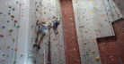

Experience the thrill of climbing in our three Cape Town climbing gyms. With indoor and outdoor walls, dedicated bouldering areas, and top-end training facilities, there’s something for everyone.Whether you’re a complete beginner looking for a great way to get fit while having fun, an intermediate climber wanting to improve your grades and technique, or an experienced climber needing somewhere to get in some focused training, you’ve come to the right place!
Get ready to rock at CityROCK indoor climbing gym in Cape Town. With hundreds of routes, overhanging climbing sections and over 450m² of climbing area, the indoor climbing gym is the largest of its kind in South Africa.Strapped into a climbing harness with metres of vertical horizon before you, your first instinct is to keep both feet firmly on the ground. But once you’ve taken the first step up onto the first of many colourful landing spots that jut out from the ‘rock’ surface you feel a sense of power. An overwhelming determination to climb and keep climbing sets in and you’re off to reach your own personal summit.
Table Mountain offers rock climbers of all abilities world-class routes on high quality rock. The famous Mother City landmark itself offers inspiring traditional (“trad”) multi-pitch climbing and the surrounding crags of the Peninsula offers exceptional bolted sport climbing in scenic areas. The sport climbing is mostly single-pitch, but some multi-pitch routes are available.Table Mountain climbing is mostly on sandstone but there are some granite crags scattered around the Peninsula and Winelands. enture Forth offers climbers the chance to experience Table Mountain and the surrounding crags in safety with a qualified rock climbing guide. Various options available from half-day sport climbing to full-day trad